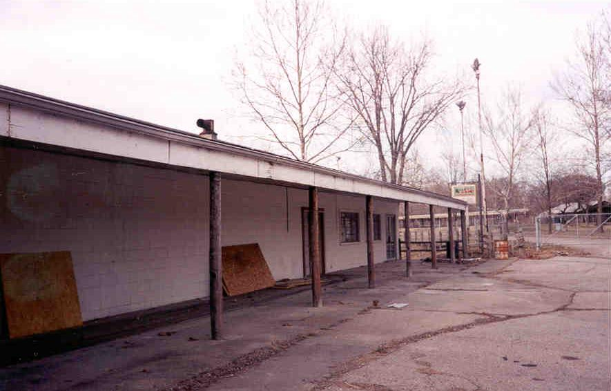

In late March of 2000 Rookie and I drove out to the Fantasy Farm in Middletown, Ohio, an area sometimes referred to as Lesourdsville Lake. It closed in 1992. Right next door is the very recently defunct Americana Amusement Park. We parked at the little motel which marks the entrance to the Farm and walked behind it, past the gate, right into the place.

The Fantasy Farm was a kids' park built in 1968 by Edger Streifhau, the man who had been responsible for Americana back in 1921. In its heyday, featured rides such as the Wild Mouse, Scrambler, and Bumper Cars, as well as a petting zoo, mini-racecars, and old-fashioned stores.

Many things have been removed since the good old days; the place closed down in the early nineties. When we went somebody had turned one of the big concession buildings into his house and go cart racers were storing their stuff at the back. The Fantasy Farm is being consumed by other things. Below you can see parts of the racecar track and a walkway, among other things.

Of the rides that still existed when we visited, the Bumper Car hut was the most recognizable. Peeking through the pavement at various places were the small-gauge tracks for the Steam Tractor Engine train ride.


Also present were the barns from the petting zoo, most of which were absolutely falling to pieces. One was painted with that classic design from Ohio farm country, the Mail Pouch Tobacco ad.


The petting zoo barns were definitely falling apart, but the more solid of the two was still recognizable as a horse barn. You can see the stalls pictured below.

The brick restroom building was boarded most of the way shut; we didn't bother climbing the obstruction to take pictures of the toilet stalls. The decrepit house covered in peeling green paint you see below is something called "Grandma's House" on the park map. One wonders if Grandma was played by different old ladies who worked in shifts, like mall Santas, or if she was more of a Mrs. Bates figure, hidden away in her creepy home behind the motel.

None of the other buildings had anything but wet trash inside, but you could tell that they used to be old-fashioned stores and things of that nature, probably a blacksmith and some other displays of that sort.

Pictured next is the strangely inhabited concession building, as well as the solid, dry base of what was probably a neat-looking fountain in its day. If I lived in a concession stand I'd at least keep the fountain going for the sake of my property value.

Far and away the coolest thing to be discovered at the abandoned Fantasy Farm, though, is the "Tom Sawyer's Caverns" ride under the old haunted house. The building, which is not far from the front gate, looks like an anonymous party house of some sort; most of the time it served as the park's toddler-level haunted house attraction.

The path of the ride winds through a network of stone-walled tunnels underneath the building. I stumbled on this one completely by accident, and, having forgotten to bring a flashlight, we went in with no light other than camera flashbulbs. To see what the best remaining ride at Fantasy Farm looks like on the inside, click the picture below and visit the Tom Sawyer's Caverns section.

Explore the Caverns
As I said, the Fantasy Farm is located next door to Americana. From the back of the park you can look across a go-cart track and see the place. Over the years the Fantasy Farm has had something of a rocky relationship with its neighbor. After Edger Streifhau established Americana in 1921, he ran it for several years, then grew angry and resentful of later management. The placement of the kiddie park he built late in life is no accident; it was his intention to draw families with young children away from the bigger park. For more on Americana, including an off-limits exploration of all it has to offer, see my page here.
As I said, what was once the Fantasy Farm is being eaten slowly up by other things--especially storage, which seems to be its primary purpose these days. I visited in early 2000, so many of these things may no longer still be there to see. Hopefully some of it will survive. To find it for yourself, look behind the motel next to Americana Amusement Park on Route 4 in Middletown.
Tom Sawyer's Caverns
Fantasy Farm Memorial
Back